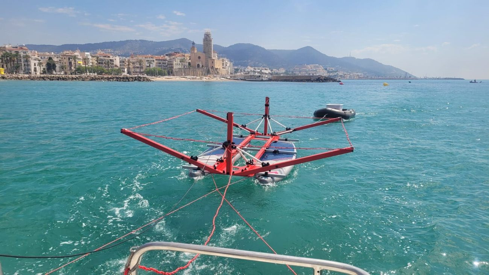
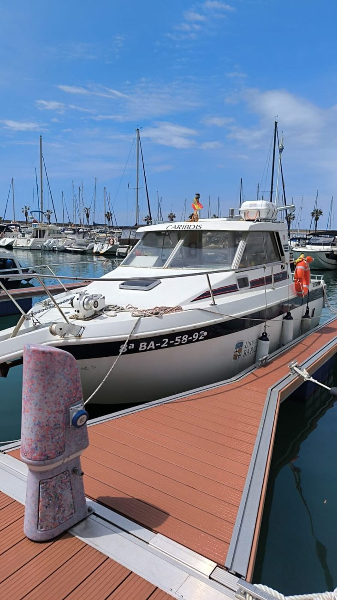
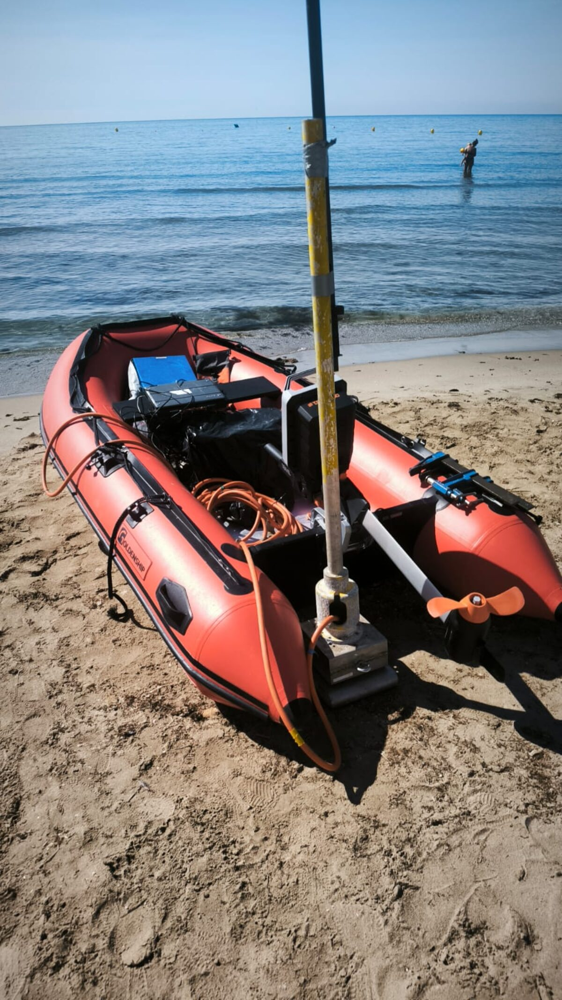
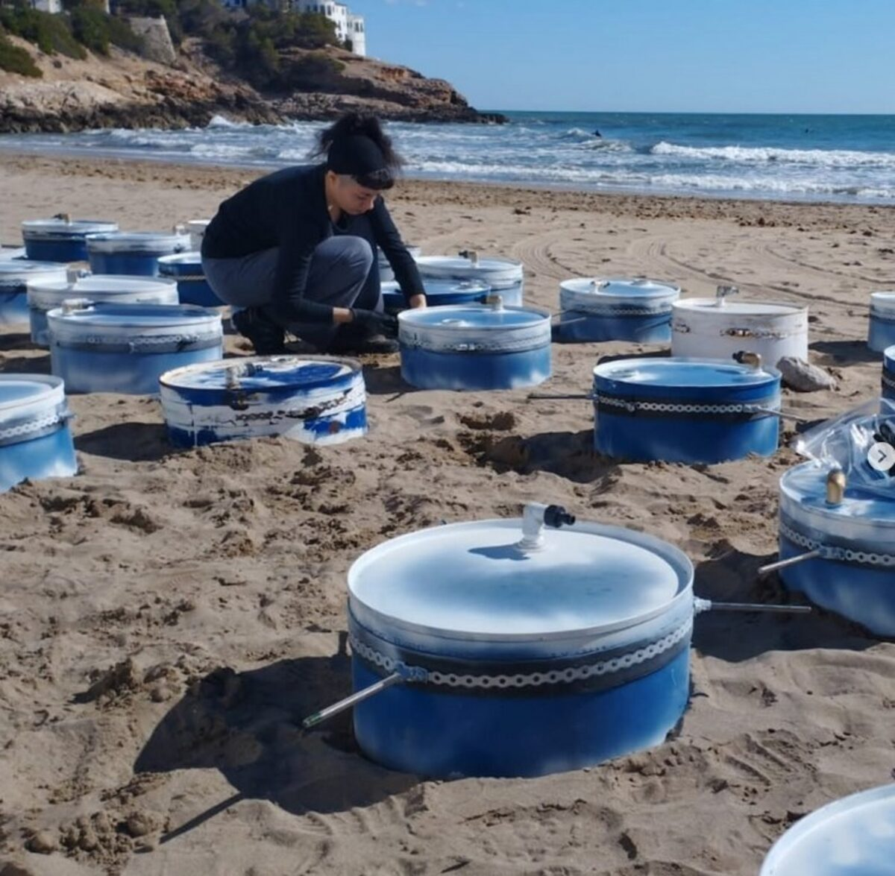
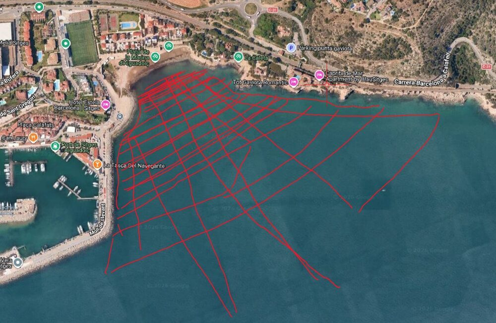

IMPAS-Garraf
IMpactes de la descàrrega d'Aigua Subterrània als ecosistemes mediterranis marins: identificació i quantificació dels fluxos de contaminants a les aigües costaneres del Massís del Garraf.
Campanya de tomografia elèctrica amfíbia (TEA) davant Sitges · GMAR-UB
Finançat per l'Agència Catalana de l'Aigua · RDI001/24/000039 · 2024–2027
Pressupost total del consorci, amb finançament propi i cofinançament inclosos: 337.479 €
Les zones costaneres reben aigua, nutrients i contaminants no només dels rius, sinó també de la descàrrega d'aigua subterrània (DAS) —un flux invisible i difús que, a escala global, transporta tant de solut cap al mar com els rius. Al Massís del Garraf, un aqüífer càrstic amb connexió directa amb el Mediterrani, aquest procés adquireix una rellevància especial: l'antic abocador de la Vall d'en Joan, clausurat des de 2006, continua alliberant lixiviats amb amoni, mercuri, arsènic i altres contaminants que es filtren cap a l'aqüífer i, des d'aquí, cap a les surgències submarines de la costa.
IMPAS-Garraf és el primer projecte que es proposa localitzar, quantificar i monitoritzar aquests fluxos amb precisió, i avaluar-ne l'impacte sobre els ecosistemes costaners —incloent-hi les praderies de Posidonia oceanica— per donar a l'Agència Catalana de l'Aigua coneixement aplicable a la gestió del litoral.
Àmbit d'estudi
L'aqüífer càrstic del Garraf (MAS23) i la massa d'aigua costanera adjacent (C23), entre el port de Vallcarca i el port de Garraf
La costa del Garraf
Imatge de satèl·lit (Esri World Imagery) · localització aproximada dels punts clau
Els set paquets de treball
Cada paquet indica el grup que el lidera. La part associada al GMAR-UB —identificació de surgències i impacte ecològic— es marca amb GMAR-UB
Coordinació interna i amb l'ACA
Gestió del consorci i canal bidireccional d'informació amb l'Agència Catalana de l'Aigua durant els 3 anys de projecte.
Caracterització de la massa d'aigua subterrània
Integració de dades hidrogeològiques, químiques i meteorològiques prèvies i noves per construir el model conceptual de l'aqüífer del Garraf.
Identificació de les surgències marines d'aigua subterrània
Cartografia marina amb ecosonda multifeix, tomografia elèctrica i traçadors químics per localitzar i delimitar les zones de descàrrega a la costa del Garraf.
Quantificació de la DAS i els fluxos de compostos
Campanyes estacionals amb isòtops de radi i radó, model numèric de flux i caracterització biogeoquímica de les surgències submarines.
Variabilitat temporal de la descàrrega
Monitoratge anual amb línies instrumentals oceanogràfiques i mostreig durant esdeveniments meteorològics extrems.
Impacte de la DAS en el fons marí i l'ecosistema bentònic
Mostreig i datació de testimonis de sediment per reconstruir la història de la contaminació i avaluar-ne l'efecte sobre les comunitats bentòniques i les praderies de Posidonia oceanica.
Difusió i divulgació dels resultats
Publicacions científiques, StoryMap públic, jornades amb l'ACA i altres administracions, i comunicació al públic general.
El consorci
Cinc grups de recerca catalans amb perspectives complementàries sobre les masses d'aigua costaneres
Radioactivitat ambiental. Lidera el projecte i quantifica la DAS amb isòtops de radi i radó.
Hidrologia subterrània. Model conceptual i numèric de l'aqüífer del Garraf.
Exploració electromagnètica i sísmica. Tomografia elèctrica de l'aqüífer i l'abocador.
Ecologia de microorganismes marins (CSIC). Dimensió microbiana de la DAS.

GMAR-UB
Grup de Recerca en Geociències Marines · lidera els PT3 i PT6
Grup consolidat (2021SGR01195) i referent internacional en l'avaluació d'impactes antropogènics en ambients marins. Aporta la cartografia marina d'alta resolució —amb l'embarcació Caribdis de la UB— i les infraestructures d'anàlisi no destructiva de testimonis de sediment del laboratori CORELAB.
- Marc Cerdà i Domènech — investigador principal de la proposta i responsable dels PT3 i PT6
- David Amblàs Novellas — tècniques geofísiques marines i morfodinàmica
- Anna Sànchez Vidal — investigadora ICREA Academia, forçaments atmosfèrics i oceanogràfics
- Galderic Lastras — cartografia submarina i processos geològics de marge continental
- Jaime Frigola Ferrer — reconstrucció de condicions oceanogràfiques a partir de registres sedimentaris
- Laura Moscat — tècnica de recerca, TFG previ sobre surgències al Garraf
Metodologies
Un enfocament multimetodològic pioner a Europa: traçadors, geofísica i models combinats per localitzar i quantificar la DAS
Cartografia multifeix
Ecosondes batimètriques d'alta resolució per identificar la morfologia i reflectivitat del fons marí (GMAR-UB).
Tomografia elèctrica
Perfils marins i amfibis de resistivitat per mapejar zones preferencials de descàrrega (GHS-UPC, EXES-UB).
Traçadors químics i radioactius
Radó, isòtops de radi, salinitat i CO₂/CH₄ per localitzar i quantificar la DAS de forma contínua (GRAB-UAB).
Models hidrogeològics
Simulació numèrica del flux de l'aqüífer per predir la magnitud i distribució de la DAS (GHS-UPC).
Imatges tèrmiques
Teledetecció aèria, satel·litària i amb drons per detectar el contrast tèrmic de la DAS (ICGC).
Cambres bentòniques
Mesura directa dels fluxos de descàrrega al fons marí en les zones de surgència (GRAB-UAB, GHS-UPC).
Testimonis de sediment
Datació amb ²¹⁰Pb i microtomografia computeritzada (CORELAB-UB) per reconstruir la contaminació històrica.
Línies instrumentals oceanogràfiques
Sensors de conductivitat i temperatura fondejats durant un any per capturar la variabilitat temporal de la DAS.
Resultats i beneficis esperats
De la ciència bàsica a la gestió del litoral català
Científics
Primera estimació regional dels fluxos de DAS al Garraf, primera reconstrucció històrica del seu impacte en un ecosistema costaner, i noves metodologies —integrant traçadors, geofísica i aprenentatge automàtic— extrapolables a altres aqüífers càrstics del litoral mediterrani.
De gestió
Base de dades hidrogeològica del massís, primer model numèric de flux de l'aqüífer i informes executius per a l'ACA, com a eina de referència per a la gestió i protecció de les masses d'aigua MAS23 i C23.
Socioambientals
Zonificació de l'afectació per contaminació al llarg de la costa i dades clau per protegir i regenerar els ecosistemes costaners del Garraf, amb especial atenció a les praderies de Posidonia oceanica.
Al terreny
Campanyes de mostreig i geofísica a la costa del Garraf i Sitges



Finançament i afiliació